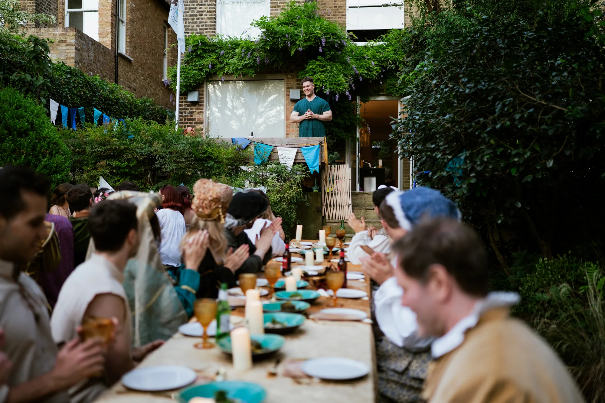

11th C. · 6 Courses
The Norman Conquest
Forest game, spiced meats & flowing wine fit for William's court.

Historical Private Dining · London

Chef Josh grew up across Cantonese, Shanghainese, Egyptian, Russian, Dutch and British kitchens, cooking since age 10. Each booking centres on one complete 6-course banquet from a single historical era.
"Everything I ate was new and I enjoyed every bite." — Ming guest, N. London
Private homes across London & Greater London, or limited dates in our N10 garden venue.

Scan to see every course inside each 6-course menu.
Forest game, spiced meats & flowing wine fit for William's court.

Ayyubid royal hospitality with spit-roasts, saffron & rose water.

Imperial palace artistry contrasted with bold provincial Chinese flavours.

The Columbian Exchange in six courses from Europe to Tenochtitlan.

Imperial Slavic estate classics fused with meticulous French haute cuisine.

Pick a signature menu or request any era, tailored to your kitchen & dietaries.